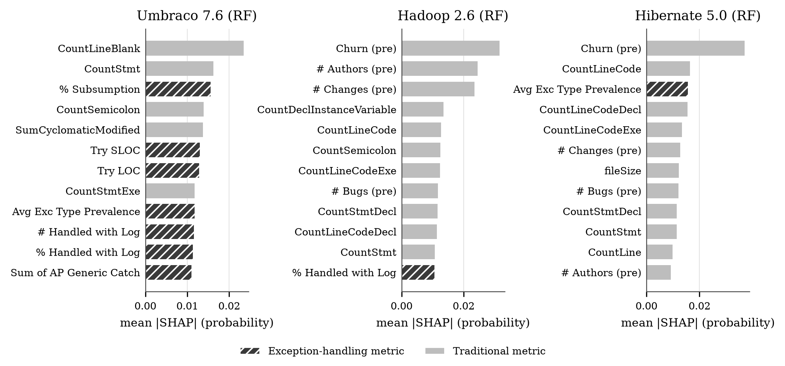

Scaffold (Phase 5). Reads the result files in results/. Serve from the repo root:
python dashboard/serve.py → http://localhost:8000/dashboard/.
Triggering runs via a job queue is future work; run the documented commands in docs/REPRODUCTION.md §5.
